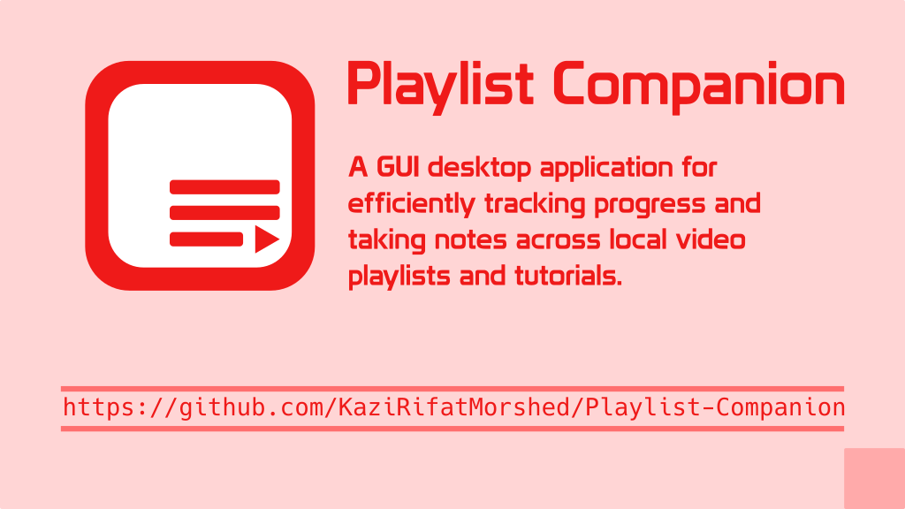

PlaylistCompanion

PlaylistCompanion is a cross-platform desktop application designed to streamline your video learning experience. Built with Qt6, it offers a robust set of tools for managing video playlists, tracking learning progress, and taking notes, all within a clean and intuitive interface.
Key Features
Playlist Management
- Effortless Control: Create, edit, and remove playlists with ease.
- Auto-Import: Simply add a folder, and the app automatically scans and imports all video files.
- Smart Sync: Keep your playlists up-to-date by syncing with source folders to include new additions.
Progress Tracking
- Watch Status: Mark videos as watched or unwatched to keep track of your learning journey.
- Quick Navigation: Seamlessly jump between videos with built-in "Next" and "Previous" controls.
- Visual Cues: Clear highlighting in the video table shows your current progress at a glance.
Detailed Analytics
- Progress Bars: Real-time visual representation of completion for each playlist.
- Time Statistics: Automatically calculates total watched time and remaining time in hours.
- Completion Stats: View the exact count of videos watched versus the total count.
Integrated Note-Taking
- Persistent Notes: Write and save detailed notes for *every* video in your playlist.
- Auto-Save: Your notes are automatically saved and loaded as you navigate through your videos.
Media Integration
- External Player Support: Launch your videos in your favorite external media player.
- Configurable Preferences: Set your preferred default media player in the settings.
- Automatic Thumbnails: Thumbnails are generated automatically to help you visually identify your videos.
Data Reliability & Portability
- SQLite Backend: All your data is safely stored in a local SQLite database.
- Backup & Restore: Built-in tools to create database backups and restore them whenever needed.
- Cross-Platform: Native support for Windows, macOS, and Linux thanks to the Qt6 framework.